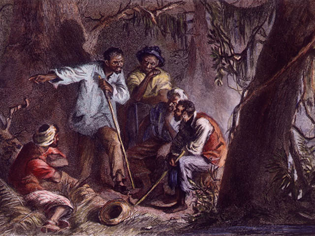

Drawing of Nat Turner preaching to his supporters
Who?
Nat Turner was a slave born in Virginia, who, according to his parents, was destined for something great.
Read more.What?
Nat Turner's 1831 slave revolt in Southampton County, Virginia caused chaos throughout the country.
Read more.Who cares?
This revolt is important because it caused governments to react, and made Nat Turner a martyr for the cause of abolition.
Read more.